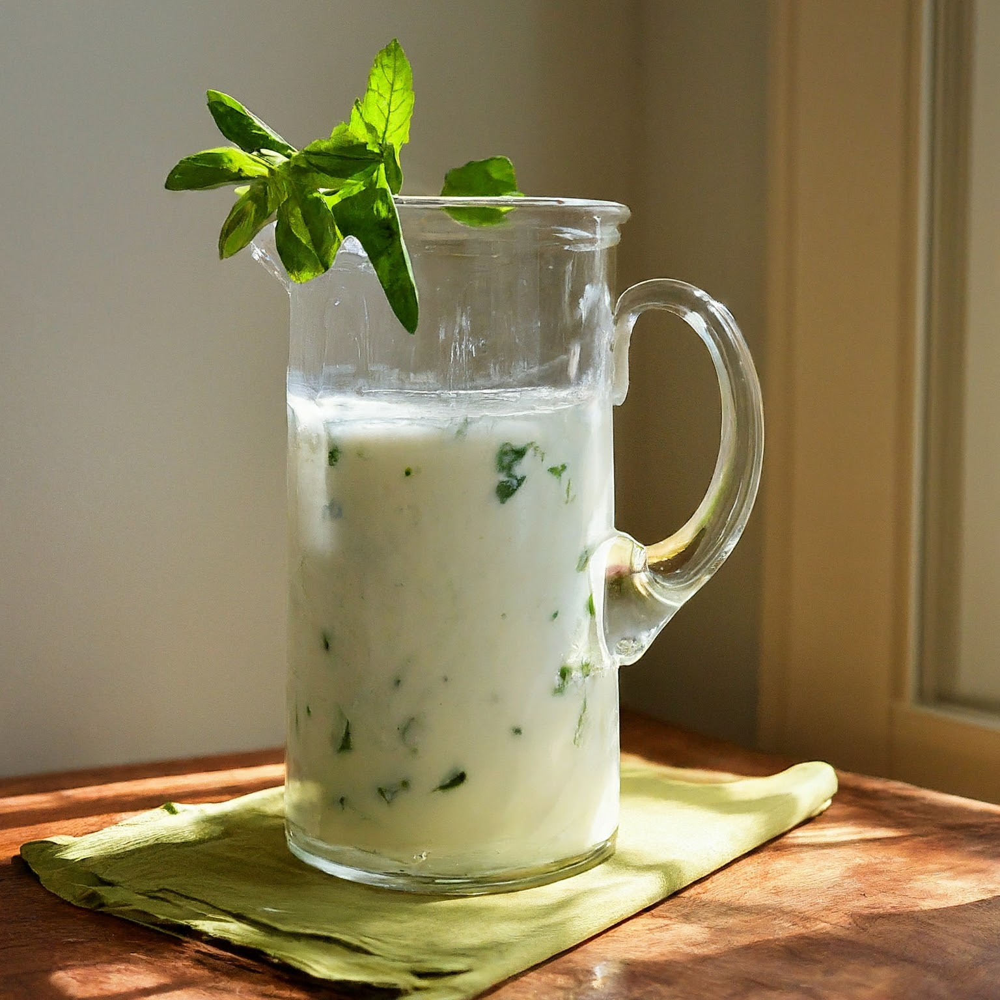

Mint Buttermilk
Ingredients:
2 cups plain yogurt (whole milk yogurt for a richer flavor)
1 cup cold water
1/4 cup fresh mint leaves
1 tablespoon honey or sugar (optional, to taste)
Salt to taste
Instructions:
Prepare Mint: Wash the mint leaves thoroughly and pat them dry. You can leave them whole or chop them roughly, depending on your preference.
Blend: In a blender, combine the yogurt, cold water, mint leaves, and honey or sugar (if using). Blend until smooth and creamy.
Strain (Optional): For a smoother texture, you can strain the buttermilk through a fine-mesh sieve to remove any larger mint pieces.
Season and Chill: Add a pinch of salt to taste and stir well. Refrigerate the mint buttermilk for at least 30 minutes, or until well chilled.
Serve and Enjoy: Pour the chilled mint buttermilk into glasses and garnish with a sprig of mint (optional).
Tips:
Cultured Buttermilk: If you have access to cultured buttermilk, you can skip the yogurt and use 2 cups of buttermilk instead.
Adjust Mint Intensity: Start with less mint and gradually add more to your desired level of minty flavor.
Flavor Variations: For a twist, add other herbs like fresh cilantro or a few slices of cucumber to the blender along with the mint.
Spicy Touch: For a hint of spice, add a pinch of cayenne pepper or a few red pepper flakes while blending.
Leftovers: Store leftover mint buttermilk in an airtight container in the refrigerator for up to 3 days. However, the texture and flavor might deteriorate slightly over time.
Enjoy your cool and refreshing homemade mint buttermilk!